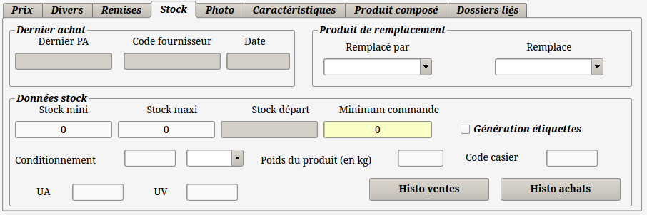

~ Comptabilité et Facturation Laurux ~

~ Comptabilité et Facturation Laurux ~ |
|
|
|
Documentation en cours.....
La gestion de stock est un paramètre important
pour une entreprise. Elle permet d'une part de répondre rapidement aux
demandes (livraisons et commandes) des clients et d'autre part de
limiter son impact
sur la trésorerie de l'entreprise.
Nous allons voir ci-dessous comment s'organiser et
paramétrer correctement Laurux pour optimiser sa gestion de stock.
1- Quelques théories indispensables.
Tenue des
stocks: C'est le moyen de connaître en temps réel la
quantité de produits physiquement stockés, potentiels, affectés ou
disponibles.
Gestion des
stocks:
C'est la mise en ½uvre de certains moyens pour savoir quand et
combien approvisionner.
Pilotage des
stocks: C'est
la mise en place d'une politique de stocks, c'est en définir les
répercussions financières et les niveaux de risques et c'est également
l'application d'une politique d'approvisionnement.
Optimisation
d'un stock: c ’est
le compromis idéal entre un coût de stockage minimum et un taux de
service maximum.
Les 4 méthodes de gestion de stocks:
La méthode de réapprovisionnement appelée aussi méthode calendaire.
La méthode de gestion à point de commande.
La méthode de recomplètement.
La méthode de réapprovisionnement à la commande.
Nous ne traiterons
pas ici la théorie de chaque méthode. Il est aisé de trouver sur le web
des sites spécialisés qui fournissent toutes les informations utiles.
2- La mise en place.
La gestion gestion de stock concerne par
définition les produits stockés, cependant Laurux permet certaines
actions, que nous verrons utltérieurement, sur les produits non stockés.
L'outil principal de la gestion de stock est la
fiche produit qui offre un nombre important de données cocernant le
stock.

En premier on notera la possibilité d'afficher
soit les produits stockés, soit les non stockés, soit les produits
suspendus, soit les produits en stock ou bien les produits épuisés à
l'aide des boutons situés en haut d'écran. Cela permet un travail
simplifié et rapide selon le type de recherche a effectuer. On pourra
également afficher l'ensemble des produits.
Il est également possible d'attribuer des couleurs
différentes selon la nature du produit. Ces couleurs se déterminent
dans les préférences. Dans notre exemple, les lignes vertes
représentent les produits en stock et les lignes blanches les produits
épuisés c'est a dire les produits dont la quantité est <= 0. Ainsi,
d'un simple coup d'½il on peut connaître la nature des produits
affichés à l'écran.
On va determiner si un produit est stocké ou pas directement dans la fiche du produit en activant le bouton "Stocké".
Si un produit est suspendu, c'est à dire qu'il est
présent en stock mais qu'on ne peut plus le commander (pour X raisons,
par exemple parce qu'il n'est plus fabriquer par le constructeur) il
suffira de cocher le bouton "Suspendu". Ainsi, le produit pourra être vendu mais ne pourra plus être commandé chez les fournisseurs.
Dans cet écran on a des renseignements directs sur
les quantités en stock ainsi que sur les quantités en commande
fournisseurs. Il est possible, en cliquant sur le bouton de recherche
d'ouvrir une fenêtre affichant les données des clients, les dates des
commandes et les quantités en commande pour chaque commande client. Un
clic sur une ligne de cette fenêtre va ouvrir le détail de la commande
sélectionnée.
On aura un fonctionnement identique avec les commandes fournisseurs.
Un élement important de la fiche produit est la zone "Ref équivalente". Il y a une page spécifique pour la gestion des références équivalentes
Notez que le nombre de références équivalentes n'est pas limité.

Dans la fiche article il y a un onglet nommé "Stock" qui offre des renseignements intéressants concernant la gestion du stock. On
a les données concernant la dernière commande du produit. Son dernier
prix d'achat, le fournisseur chez qui il a été commandé et la date
d'achat.
Sous ces renseignements on pourra saisir le stock mini et le stock maxi
et le minimum de commande. Voyons à quoi vont nous servir ces
données.
Le stock mini est le niveau de stock en deça duquel le produit passera
dans les commandes automatiques. Le stock maxi est le niveau au delà
duquel on ne pourra pas commnder.
Exemple : Si notre produit affiché a une quantité = 5, il ne passera
pas dans les commandes automatiques, s'il a une quantité = 1 alors la
quantité commandée sera de 9. Nous verrons plus loin qu'il existe
d'autres paramètres pour le calcul des quantités & commander.
Une autre donnée intéressante concerne les produits de remplacement.
Les produits de remplacement sont des produits qui seront proposés à la
vente lorsque le produit saisit est en rupture de stock. Notez que le
nombre de produits de remplacement n'est pas limité.
----------------------------------------------------------------------------------------------------------------------